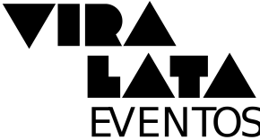

vira-latas
não têm
vergonha
de ser
quem
são
a VIRA LATA é para quem aproveita cada momento e não deixa que as imposições e opiniões dos outros fiquem no caminho de sua velocidade
somos punks!
desafiamos
as regras e
os padrões da
sociedade
mas sem deixar de
lado a paixão
canina por nossos
semelhantes
e o companheirismo
que só os mais
caninos
compartilham
